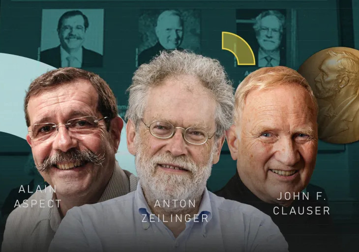

ثلاثي نوبل [1]
لم يستطع بيل أن يقوم بالتجربة إلى أن جاء العالم الأول جون إف. كلاوسر (John F. Clauser) (أميركا)ممن حصلوا على جائزة نوبل وقام بها وكانت النسبة هي 50% وان هذا الشيء يتوافق مع فكرة التشابك الكمي.
بعدها جاء العالم الثاني أنطون زيلينغر (Anton Zeilinger) (النمسا) الحاصل الجائزة نوبل وقام بإعادة التجربة باستخدام إشارات حيث لا يتم التحكم بها قادمة من مجرة بعيدة وأكدت التجربة الى نفس الاستنتاج السابق حيث كانت النسبة أقل من 55% .
بعد أن أثبت التشابك الكمي سارع العلماء للإستفادة من هذا التشابك من خلال نقل البيانات ولكن الحلقة الضائعة هي أن هذه الأجسام الدون ذرية تحمل جميع الاحتمالات في نفس الوقت ولا يتم تحديد الحالة إلا بعد الرصد وهذا لا يسمح لاستخدامها مثل نظام (0) و (1).
جاء العالم الثالث آلان أسبيه (Alain Aspect) (فرنسا) الحاصل على نوبل للفيزياء وقام بربط جسيمين متشابكين في اتجاهين مختلفين وقام بربط الأول مع جسيم ثالث ومن خلال التجربة اتضح انه تم نقل معلومات الجسم الثالث إلى الجسم الثاني المرتبط مع الاول فقط.
